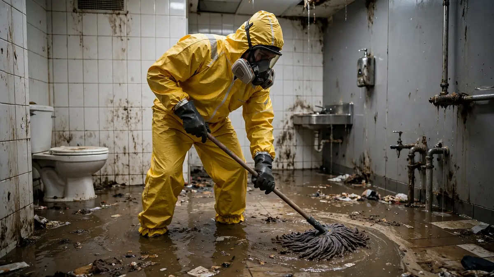

Safety · Oct 6, 2026 · 8 min read
Sewage Backup Safety: Why Category 3 Water Needs Special Care
A toilet backing up or a drain vomiting gray water into the shower is not just a plumbing disaster — it is a health hazard. The sewage backup health risks are real, they are not limited to "do not drink it," and they are the reason professionals treat this as a contamination job, not a water job. If you are standing in front of a backup right now: keep people and pets out of the water, do not try to mop it up yourself, and read the rest once everyone is safe.

What Is Actually in Sewage Backup
Restoration professionals classify water by contamination level, and sewage is Category 3 — "black water," the highest category. That is not a marketing term. It means the water is presumed to carry disease-causing organisms, and it is treated accordingly regardless of how clear it looks.
A backup can contain bacteria such as E. coli and salmonella, viruses including norovirus and hepatitis A, parasites like giardia, and a cocktail of chemicals from everything that went down every drain upstream of the blockage — cleaning products, solvents, personal-care chemicals. The exact mix depends on the source, which is why professionals do not test and guess; they assume the worst and suit up.
How Exposure Actually Happens
Most people picture the risk as drinking the water. Almost nobody does that. Real-world exposure is sneakier:
- Skin contact with micro-abrasions. The tiny cuts and scrapes everyone has on their hands and feet are entry points. Wading barefoot through backup water to "just grab something" is how exposures happen.
- Splashes to eyes, nose, and mouth. Mopping, plunging, or shop-vaccing a backup aerosolizes contaminated droplets. You do not need to swallow water to be exposed.
- Hand-to-face transfer. Touch a contaminated surface, rub your eye, eat a sandwich — the chain is that short.
- What the water touched afterward. Contamination does not stay in the puddle. It wicks into drywall, soaks into carpet pad, and coats every surface the water reached. The visible water is only part of the problem.
Who Is Most Vulnerable
Healthy adults can often weather minor exposures without serious illness, but some people face meaningfully higher risk: young children (who put everything in their mouths and play on floors), older adults, pregnant women, and anyone with a weakened immune system or open wounds. If anyone in the household falls into those groups, the case for staying completely clear of the affected area — and for professional cleanup rather than DIY — gets much stronger.
What Not to Do (the Common Mistakes)
Almost every bad outcome we hear about starts with one of these:
- Do not use a household fan to "dry it out." Air movement aerosolizes contaminants and spreads them through the house. This is the single most counterproductive thing you can do.
- Do not use your regular vacuum or mop and then put them away. You have now contaminated the tools and everywhere you stored them.
- Do not assume clear water is safe water. A backup that looks like clean water can still carry the full contaminant load — clarity tells you nothing about what is dissolved in it.
- Do not keep porous materials that soaked it up. Carpet pad, soaked drywall, upholstered items, and mattresses that absorbed Category 3 water generally cannot be restored to a hygienic standard. Cleaning the surface does not decontaminate the core.
- Do not run the HVAC. If the system can pull air from the affected area, shut it down until the space is cleaned — you do not want the ductwork distributing what was in that water.
What Proper Cleanup Actually Involves
Professional sewage backup cleanup follows a deliberate sequence, and understanding it explains why it costs more and takes longer than a clean-water job. First comes containment — sealing off the area so nothing migrates. Then extraction with dedicated equipment that never touches clean-water jobs. Then the hard part: removal of porous materials that cannot be salvaged, followed by thorough cleaning and disinfection of everything that remains, and finally structural drying verified with moisture readings.
For losses where the contamination is severe or the water sat long enough to deeply penetrate materials, black water cleanup protocols go further — more aggressive removal, more extensive disinfection, and stricter clearance criteria before the space is returned to use. The guiding principle throughout: when in doubt, remove it. You cannot disinfect your way out of saturated drywall.
After the Cleanup: What to Watch
Once professionals have finished, a few things still deserve attention. If anyone who was exposed develops gastrointestinal symptoms, skin infections, or respiratory irritation in the following days, mention the sewage exposure to their doctor — it changes the diagnostic picture. Keep the area dry and ventilated while it fully stabilizes, and if the backup came from a municipal line or a failed backflow preventer, get the plumbing cause fixed before anything else; the cleanest cleanup in the world does not survive a second backup.
Frequently Asked Questions
Is sewage backup dangerous?
Yes — sewage is Category 3 "black water." It carries bacteria, viruses, and parasites that cause gastrointestinal illness, skin and wound infections, and respiratory irritation, and some of those organisms persist on damp surfaces for days after the water is gone. That is why a backup involving toilet waste should be handled as a contamination cleanup, not a mopping job.
What are the main sewage backup health risks?
Exposure to bacteria, viruses, and parasites that cause gastrointestinal illness, skin and wound infections, and respiratory irritation. Risk comes through skin contact, splashes, hand-to-face transfer, and contaminated surfaces — not just ingestion.
Is it safe to clean up a small sewage backup myself?
A very small, contained backup of gray water (not toilet waste) can sometimes be handled with proper protective gear — gloves, eye protection, boots, and thorough disinfection after. Anything involving toilet waste, large volumes, or water that sat for hours calls for professional cleanup.
How long are sewage germs dangerous on surfaces?
It varies widely by organism and conditions — some pathogens persist on damp surfaces for days. That is why disinfection, not just drying, is part of professional cleanup, and why porous materials that absorbed sewage are removed rather than cleaned.
Can I just pour bleach on it?
Bleach disinfects hard, non-porous surfaces when used correctly, but it does not make sewage-soaked carpet pad, drywall, or upholstery safe. And it does nothing about the moisture trapped inside materials. Bleach is a finishing step for hard surfaces, not a cleanup strategy.
Does homeowners insurance cover sewage backup cleanup?
Standard policies typically exclude sewer backup unless you carry a water/sewer backup endorsement. Check your policy — this is one of the most common coverage gaps in Florida, and the endorsement is usually inexpensive to add before you need it.